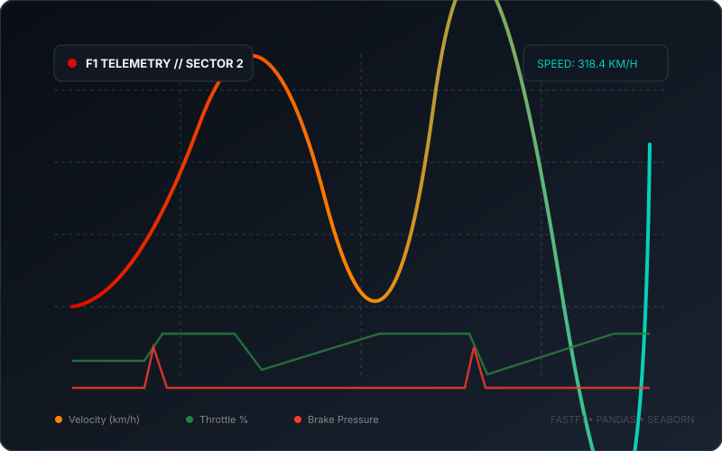

Selected Projects
The F1 Telemetry Analyzer
An in-depth telemetry analysis and visualization engine built for Formula 1 session telemetry. Analyzes cornering lateral G forces, braking point deltas, gear selection optimality, and stint-based tire degradation curves.


StereoPose 6D Pose Estimation
Research thesis investigating 6DoF object pose estimation using stereo camera pairs and ConvNeXt V2 Nano backbones. Benchmarked three distinct regression and keypoint head architectures against metric occlusion.
High-Level MTL Translation Pipeline
A modular end-to-end Machine Translation (MTL) system for manga and manhwa localization. Combines text detection, clean bubble inpainting, multi-frame LLM context resolution, and automated typography placement.


Penpal — Tactile iPadOS Canvas
Ultra low-latency digital ink canvas engineered for iPadOS and Apple Pencil. Implements custom stroke prediction algorithms, pressure curve calibration, and multi-threaded rendering pipelines.
Reefora — 3D Marine Simulation
Real-time interactive coral reef ecosystem simulation developed with a 5-developer squad at the Apple Developer Academy. Simulates procedural underwater light scattering, coral growth states, and marine life AI.